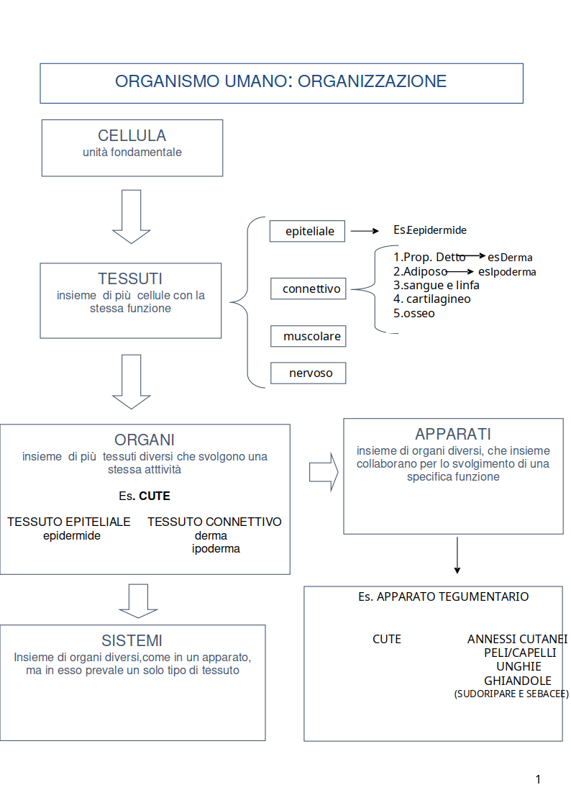

DERMATOLOGIA

La dermatologia è la parte della medicina che studia la pelle, i capelli e le unghie.
Si occupa di:
- diagnosi: scoprire di quale malattia si tratta;
- trattamento: curare la malattia.
- Acne: punti neri, brufoli, soprattutto in adolescenza.
- Dermatiti: pelle rossa, secca, pruriginosa (che dà fastidio).
- Psoriasi: chiazze spesse e squamose sulla pelle.
- Melanoma: un tipo di tumore della pelle, molto serio ma curabile se scoperto presto.
I tessuti
Un tessuto è un insieme di cellule simili tra loro. Hanno la stessa forma, struttura e funzione. Sono unite da una sostanza tra le cellule, chiamata sostanza intercellulare. Questa sostanza cambia a seconda del tessuto. I tessuti principali sono quattro:- Tessuto epiteliale
- Tessuto connettivale
- Tessuto muscolare
- Tessuto nervoso
Tessuto epiteliale
Il tessuto epiteliale è fatto di cellule molto vicine tra loro. Gli spazi tra una cellula e l’altra sono quasi assenti. Le cellule si tengono unite grazie a strutture speciali sulle loro superfici. Queste strutture si incastrano come pezzi di un puzzle. Insieme formano il complesso giunzionale. Esistono tre tipi principali di epitelio:- Epitelio di rivestimento: copre la pelle e le superfici interne. Protegge, assorbe, scambia sostanze.
- Epitelio ghiandolare: produce e rilascia sostanze (come sudore, enzimi, ormoni).
- Epitelio sensoriale: aiuta a percepire sapori, odori e altri stimoli (es. lingua, naso).
Tipi di epitelio di rivestimento
Gli epiteli di rivestimento si dividono in base al numero di strati cellulari:- Epitelio semplice (monostratificato): un solo strato di cellule.
- Epitelio composto (pluristratificato): più strati di cellule.
- Epitelio pseudostratificato: sembra avere più strati, ma è uno solo. I nuclei sono a diverse altezze, quindi sembra stratificato.
- Epitelio pavimentoso: cellule piatte e sottili. Permette il passaggio di gas e liquidi. Si trova nei polmoni (alveoli), nei reni, nei vasi sanguigni (endotelio), e nelle sierose (pleura, pericardio, peritoneo).
- Epitelio cubico: cellule a forma di cubo. Riveste condotti e tubi. Ha funzioni di assorbimento e protezione. Si trova in diversi organi: nei tubuli renali, nei dotti delle ghiandole (come quelle salivari e il pancreas), nell’ovaio, nei plessi corioidei del cervello, sulla capsula del cristallino e nella retina (epitelio pigmentato).
-
Epitelio cilindrico: cellule alte e sottili, a forma di cilindro.
Riveste organi cavi come l’intestino e le vie respiratorie.
Ha funzioni di assorbimento e secrezione.
Può essere:
- con ciglia (ciliato): muove muco e particelle (es. trachea);
- senza ciglia (non ciliato): assorbe sostanze (es. intestino).
- Epitelio di transizione (urotelio): tipo speciale di epitelio. Ha caratteristiche tra epitelio pavimentoso e cubico. È elastico e resistente all’urina. Riveste l’interno della vescica e dell’uretere.


Funzioni degli epiteli di rivestimento
Gli epiteli di rivestimento coprono molte superfici del corpo.- Superficie esterna: come la pelle (epidermide).
- Superfici interne: di organi vuoti che comunicano con l’esterno (es. intestino, bocca).
- Vasi sanguigni: rivestono l’interno e si chiamano endotelio.
- Grandi cavità del corpo: come torace e addome. Rivestono anche gli organi dentro queste cavità. In questo caso si chiamano mesotelio.
- come sono fatte le cellule;
- se sono in uno o più strati;
- dove si trovano nel corpo.

Epiteli ghiandolari
Questi epiteli sono fatti di cellule che producono e rilasciano sostanze, chiamate secreti. Le cellule possono essere:- sparsе tra altre cellule;
- raggruppate in organi specializzati: le ghiandole.
- Ghiandole esocrine Rilasciano il secreto all’esterno del corpo o dentro organi (es. sudore, saliva). Usano dei dotti (tubicini) per portare fuori la sostanza.
- Ghiandole endocrine Rilasciano gli ormoni direttamente nel sangue. Non hanno dotti. Esempi: tiroide, ipofisi, surreni.

Tessuto connettivo
Il tessuto connettivo ha tanta sostanza tra le cellule, chiamata sostanza extracellulare. Al suo interno ci sono cellule e fibre. La sostanza extracellulare è fatta di:- Matrice amorfa: una specie di gel che riempie gli spazi.
- Fibre: immerse nella matrice. Sono di tre tipi:
- Collagene: resistenti e forti (come corde);
- Reticolari: sottili e a rete, sostengono organi come fegato e milza;
- Elastiche: si allungano e tornano indietro (come elastici).
- Tessuto connettivo propriamente detto: si trova sotto la pelle, attorno ai muscoli e agli organi. Dà sostegno e unisce le parti del corpo.
- Tessuto cartilagineo: flessibile e resistente. Riveste le articolazioni, forma il naso e le orecchie.
- Tessuto adiposo: formato da cellule piene di grasso. Conserva energia e isola il corpo dal freddo. Si trova sotto la pelle e attorno agli organi.
- Tessuto osseo: duro e resistente. Forma lo scheletro. Protegge organi importanti (es. cranio) e permette il movimento.
- Dà forma e sostegno al corpo;
- Protegge gli organi;
- Immagazzina energia (grasso);
- Trasporta sostanze (nel sangue, che è un tipo di tessuto connettivo);
- Partecipa alla difesa (con cellule del sistema immunitario).
Funzioni del tessuto connettivo
Il tessuto connettivo ha molte funzioni importanti nel corpo.- Connette tessuti e organi tra loro.
- Sostiene tutto il corpo (es. lo scheletro). Protegge gli organi e ne forma la struttura interna.
- Trasporta sostanze e fornisce nutrimento alle cellule.
- Difende l’organismo, soprattutto dalle infezioni.
- nutrire;
- sostenere;
- proteggere;
- difendere.
Tessuto adiposo
Il tessuto adiposo è formato da cellule chiamate adipociti. Queste cellule accumulano grassi al loro interno. Esistono due tipi principali:- Tessuto adiposo bianco: Conserva energia sotto forma di grasso. È il tipo più comune.
- Tessuto adiposo bruno: Trasforma il grasso in calore. Aiuta a mantenere la temperatura del corpo. È più presente nei neonati e negli animali che vanno in letargo.

Tessuto nervoso
Il tessuto nervoso è formato da cellule specializzate e dai loro prolungamenti. La cellula principale è il neurone. È capace di ricevere, generare e trasmettere segnali elettrici, chiamati impulsi nervosi. Ogni neurone ha:- Corpo cellulare: contiene il nucleo. La forma e la dimensione cambiano a seconda della zona del corpo.
- Dendriti: prolungamenti corti. Ricevono gli impulsi da altri neuroni e li mandano al corpo cellulare.
- Assone: prolungamento lungo. Manda l’impulso dal corpo cellulare ad altri neuroni, muscoli o ghiandole.
I neuroni sono le cellule fondamentali del sistema nervoso.
Il sistema nervoso riceve, elabora e trasmette informazioni. Grazie a lui, il corpo può rispondere agli stimoli esterni (come luce, suono, dolore) e interni (come fame o sete). Più neuroni possono unirsi per formare un nervo. I nervi portano i segnali dal cervello e dal midollo spinale al resto del corpo. Attenzione: i neuroni non si dividono né si rigenerano facilmente. Una volta formati, in genere non si riproducono. Per questo è importante proteggere il sistema nervoso. Ogni cellula nervosa ha due proprietà principali:- Eccitabilità: capacità di reagire agli stimoli (es. tocco, luce) e trasformarli in un impulso nervoso.
- Conducibilità: capacità di trasmettere l’impulso nervoso lungo il neurone.
- viene rilasciata una sostanza chimica: il neurotrasmettitore;
- questa sostanza attraversa lo spazio tra i due neuroni;
- raggiunge il neurone successivo e trasmette il segnale.
- pensare;
- muoversi;
- sudare;
- battere il cuore;
- sentire emozioni.

BiotechProject. Un progetto per un web più inclusivo.